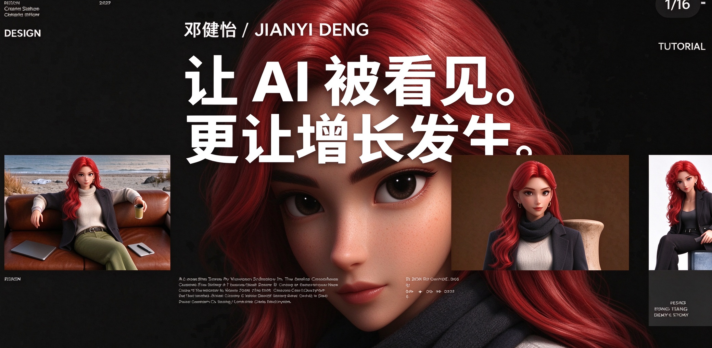

个人简介 ↗浏览作品 ↗
01 / 03
SCROLL TO EXPLORE ↓
PROFILE / 个人简介
从模型能力，
走向真实场景。
我是邓健怡，一名兼具 AI 产品经理与 AI 产品运营经验的从业者。曾参与 OPPO 移动端 AIGC 智能壁纸方案及海外推荐实验，在 CUN.com 负责多模型平台内容、创作者生态与 Prompt 资产建设。
把岗位要求，
变成可执行的工作链路。
基于简历经历整理的六个能力模块。
工作不止一面。
CUN.com 内容与创作者运营、AI 产品方案、海外本地化实验，以及 AIGC 视频实践。
JIANYI DENGSELECTED
WORK2024 — 2026
WORK2024 — 2026
项目案例 / 15 段视频点击作品卡查看详情
RECENT WORKS
AI / OPERATIONS
CONTENT / FUTURE
01 / FEATURED CASECUN.com
多模型创作平台内容运营 / 创作者生态 / Prompt 资产↗
作品放映室广告 / 叙事 / AIGC 实验↗
多模型创作平台内容运营 / 创作者生态 / Prompt 资产↗
EVERYTHING
TO ↔ CREATE
ANYTHING
作品放映室广告 / 叙事 / AIGC 实验↗
多模型协作，
从想法到交付。
Prompt 设计 / 图像与视频生成 / 海内外内容运营 / 数据复盘 / Agent 工作流
AI CONTENT
PROMPT
VIDEO
GROWTH
GLOBAL
CREATOR
PRODUCT
DATA
AGENT
ITERATION
AI CONTENT
PROMPT
VIDEO
GROWTH
GLOBAL